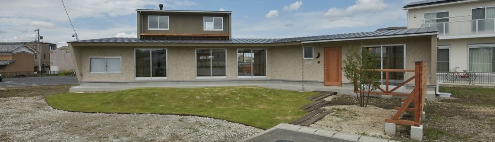
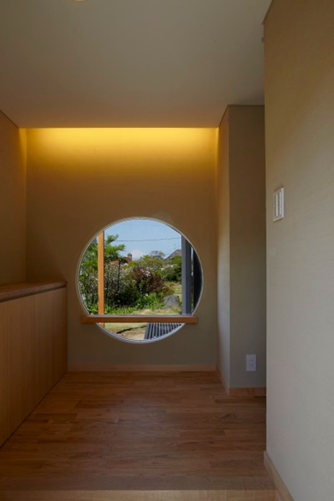
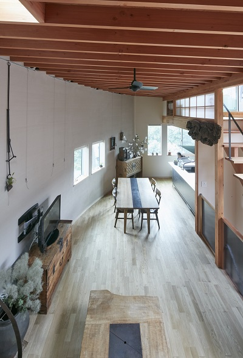

3つの理念

１．地域に根ざした設計・監理
建物を設計する際に、風土や文化、地域性を重視しています。敷地には地域独特の気候や地質があります。例えば海に面した地域では塩害などを考慮して設計することが大切です。また、歴史のある地域では、美しい街並みの保全を大切にしています。市条例の中で様々な決まりがあり、多方面からの検討や気遣いが必要となります。このように地域に根ざし、自然と共生共存する為に、今までの経験を生かしながら設計・監理を行います。
２．日本の美意識と文化の継承
良い住まいづくりに絶対にかかせないものは、建築主、設計者、施工者の信頼関係です。その三者が力を合わせ、受け継がれた技術と新しい発想を融合させた不易流行の住まいを目指しています。そして街並みを豊かに、美しくする住まいを提案しています。例えば、建物周辺に緑があることで街が豊かになります。一軒の住宅が与える影響は街並みの中ではほんの小さなことかもしれません。しかしその積み重ねが街並みの保全につながり、日本文化を継承していくと考えています。
３．コミュニケーションとコミュニティの形成
２１世紀は心の時代と言われています。このことを反映するかのように二世帯住宅が増えて参りました。核家族化に終焉が到来し、新たな家族間のつながりの図式が出てきていると感じています。私共は組織設計事務所にて、共同住宅をはじめとした公共施設の設計監理を行ない、人と人とのつながりを意識した設計を数多く手がけて来ました。その中で築いてきたノウハウを設計に生かすことで、家族間どおし、さらに地域に向けたコミュニケーションを空間で構築しています。
コンセプト

“Simple &Comfortable”が私共の空間づくりに対する基本コンセプトです。
人間にとって空間とは、「美しさと快適さ」が基本だと考えます。
華美な美しさではなく洗練され、存在自体が美しいと言う意味です。
日本人が本来持ち合わせている感性をくすぐり、 心に響くようなデザインを心がけております。
快適さは、人間の五感に響くような空間づくり、
「風、光、自然、香り、手触り」などをどのように
その空間に取り込むかを重視し計画を進めます。
この2つがぴったりと重なり合った時、理想的な空間が生まれます。
光・緑・風を五感で感じること
人間として本当に心地よい空間・・・
あたりまえはあたりまえではない
じっくりと、ゆっくりと
時間と空間は変化しつづける
日本人が本来もつ感性
それはそれは豊かなもの
Wabi-Sabi
大切に残していきたい
"How marvelous that when I am in a room with another.
The mountains, trees, wind, and rain leave us for the mind,
and the room be come a world in itself."
「部屋の中に、他の人と一緒にいることは、何と素晴らしいことか、
その時、山も木も風も雨も心の中のものとなり、
部屋はそれ自体が一つの世界になる。」
ルイス・カーン
住宅設計
●住宅設計に対する考え方
私共は、住宅の設計を行うにあたって、お客様の意見を充分に伺います。 住宅は住まう人の生き様そのものでもあります。その根本的なことを踏まえて、さらにより快適に、より健康的にまた、より楽しくなるような空間を提案していこうと努力しております。
「家」は家族が集まり、社会で疲れた体を癒し、再生する場所です。ですから、仕上げなど体にふれる部分の材料にはこだわり、無垢の木や自然塗料、珪藻土等の体にやさしいものを中心に使用します。また、外部空間には出来る限り多くの植栽を設け、それが建物内部にもとりいれられる様なプラン作りを心がけています。
「敷地」も建物を配置していく上で大変重要な要素の1つです。私共にとっては、1つの敷地に対して、いくつものプランを考えます。しかし、その敷地の特性を最大限に生かせるものはいくつでもあるわけではなく、また正解というものもありません。一番なにを優先させるかにもよりますが、「この敷地だからありえるのだ。」といえるものを目指しています。
「設計事務所」というと敷居が高いとお考えの方が多いと思いますが、私共はそのようなことはなく、何でも気軽に相談できる事務所づくりを目指しています。相談事は、玄関に置くプランターの花のことでもいいのです。家は買うものではなく、建築家と一緒につくっていくもの。そしてメンテナンスなどで一生おつきあいしていくもの。となるでしょう。
